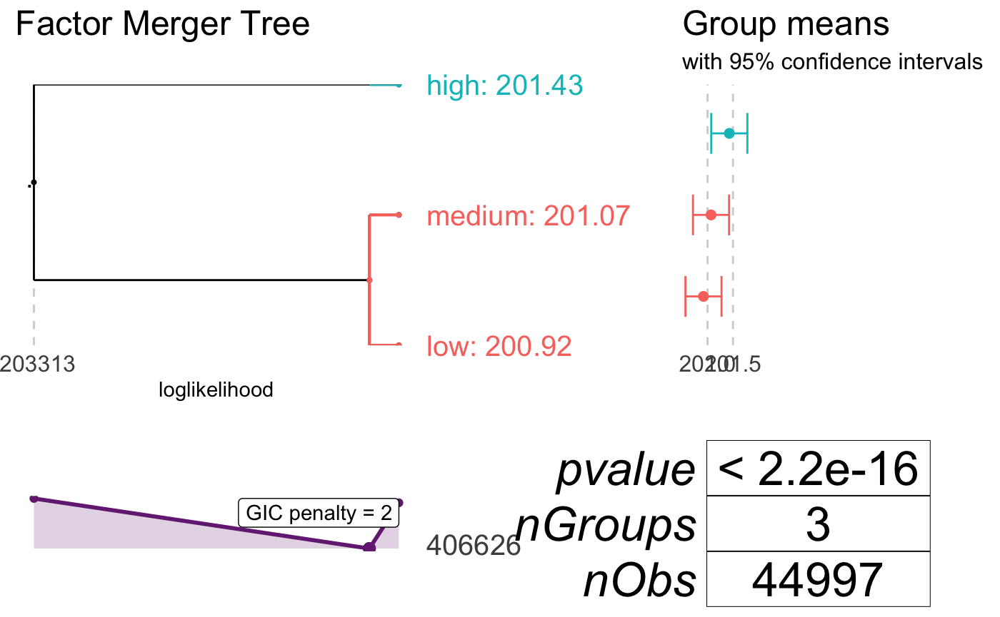
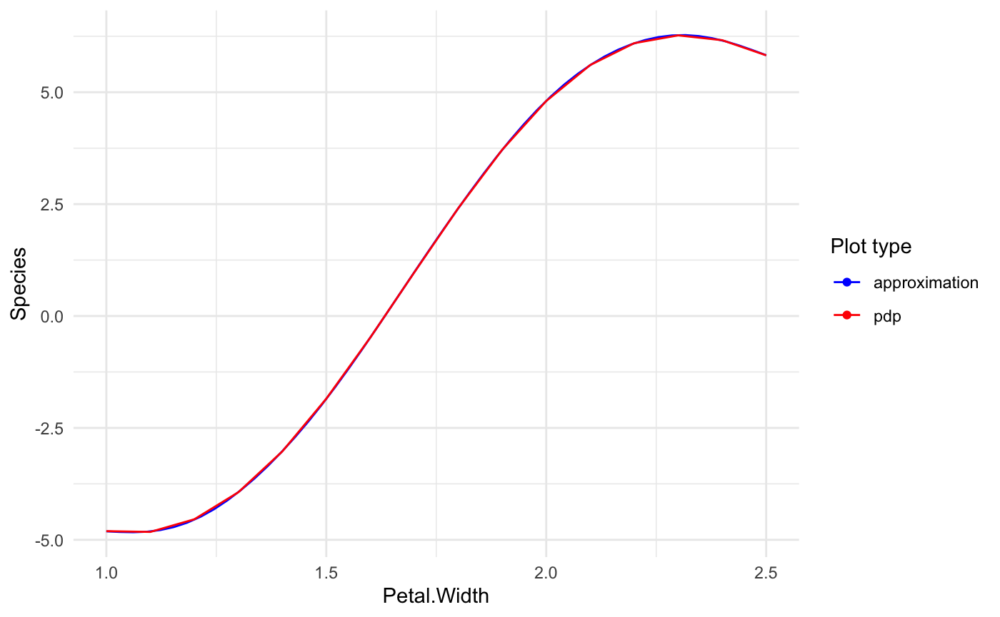

discrete.RmdThis section describes how to xspliner works when some predictors are discrete, or when we deal with classification model.
As before let’s explain the approach basing on a random forest model. For this case we use HR_data from breakDown package.
Let’s load the data
## 'data.frame': 14999 obs. of 10 variables:
## $ satisfaction_level : num 0.38 0.8 0.11 0.72 0.37 0.41 0.1 0.92 0.89 0.42 ...
## $ last_evaluation : num 0.53 0.86 0.88 0.87 0.52 0.5 0.77 0.85 1 0.53 ...
## $ number_project : int 2 5 7 5 2 2 6 5 5 2 ...
## $ average_montly_hours : int 157 262 272 223 159 153 247 259 224 142 ...
## $ time_spend_company : int 3 6 4 5 3 3 4 5 5 3 ...
## $ Work_accident : int 0 0 0 0 0 0 0 0 0 0 ...
## $ left : int 1 1 1 1 1 1 1 1 1 1 ...
## $ promotion_last_5years: int 0 0 0 0 0 0 0 0 0 0 ...
## $ sales : Factor w/ 10 levels "accounting","hr",..: 8 8 8 8 8 8 8 8 8 8 ...
## $ salary : Factor w/ 3 levels "high","low","medium": 2 3 3 2 2 2 2 2 2 2 ...and build random forest in which we predict average_montly_hours based on last_evaluation, salary and satisfaction_level predictors.
library(randomForest)
model_rf <- randomForest(average_montly_hours ~ last_evaluation + salary + satisfaction_level, data = HR_data)We’re going to make some transformation/simplification on salary variable. To do so, we need to transform formula passed into xspline function.
Similarly to continuous variable it is enough to use xf symbol on salary variable, i.e. use formula:
average_monthly_hours ~ last_evaluation + xf(salary) + satisfaction_levelWe could use the formula for our final GLM model (then we will use basic parameters for xf), but first let’s learn what changes it does.
Similarly to continuous variables the first thing we do is to get black box model response on single variable, called effect.
For continuous variable we used PD or ALE plots, which was average model response on predictor value. In a discrete case we use Individual Conditional Expectation (ICE). The construction is simple:
In training data we replace all values for selected predictor with one of the factor levels and then we perform predictions on resulting dataset. The action is repeated for all factor levels. As a result we get \(n * m\) predicted values, where \(n\) is number of observations in original training dataset and \(m\) is number of selected factor levels.
For above example (and salary variable), we will get nrow(HR_data) * 3 predicted values, as salary has 3 levels.
To generate model ICE xspliner uses pdp::partial(ice = TRUE) function. To specify additional options for the response, we may customize the effect parameter for xf, just like it was using xs:
average_monthly_hours ~ last_evaluation + xf(salary, effect = list(...)) + satisfaction_levelPossible parameters are inherited from pdp::partial function (except ice that is always TRUE).
How can we use info gathered from above data?
In continuous case, we simplified the effect with spline approximation. The main idea for discrete case is to find out which groups give similar black box model response and merge them into common groups. The final model is built on simpler variables that store some information sourced from black box. As a result the GLM is much easier to interpret (for example we reduce 10-level factor into 3-level one).
How is that implemented in xspliner?
The transformation is based on factorMerger package that “Support Adaptive Post-Hoc Fusing of Groups”.
Merging the groups uses just two functions from the package:
mergeFactorsgetOptimalPartitionDfIn order to customize variable transition, just specified (inherited from above functions) parameters inside transition parameter of xf formula symbol. For example to use “fast-adaptive” method for groups merging with optimal partition at GIC statistics value of 4, we set:
xf(salary, transition = list(method = "fast-adaptive", value = 4))In below example, we will transform salary predictor with cutting of GIC statistics at value = 2. As in continuous case we need to use the formula within xspline function:
library(xspliner)
model_xs <- xspline(
average_montly_hours ~ last_evaluation + xf(salary, transition = list(value = 2)) + satisfaction_level,
model = model_rf
)
summary(model_xs)##
## Call:
## stats::glm(formula = average_montly_hours ~ last_evaluation +
## xf(salary) + satisfaction_level, family = family, data = data)
##
## Deviance Residuals:
## Min 1Q Median 3Q Max
## -137.197 -37.956 -1.425 37.728 129.925
##
## Coefficients:
## Estimate Std. Error t value Pr(>|t|)
## (Intercept) 136.0467 2.2213 61.248 < 2e-16 ***
## last_evaluation 100.8673 2.2501 44.828 < 2e-16 ***
## xf(salary)lowmedium -0.3096 1.3929 -0.222 0.824
## satisfaction_level -11.3302 1.5494 -7.312 2.76e-13 ***
## ---
## Signif. codes: 0 '***' 0.001 '**' 0.01 '*' 0.05 '.' 0.1 ' ' 1
##
## (Dispersion parameter for gaussian family taken to be 2199.008)
##
## Null deviance: 37409709 on 14998 degrees of freedom
## Residual deviance: 32974127 on 14995 degrees of freedom
## AIC: 158000
##
## Number of Fisher Scoring iterations: 2Checking out the model summary, we can realize that “low” and “medium” values were merged into single level (generating “lowmedium” level).
It can be also found by:
## orig pred
## 1 high high
## 2 low lowmedium
## 3 medium lowmediumThe graphical result if fully sourced from factorMerger. It is enough to run:

xspliner can work with classification problems as well. As the final GLM model can work only with binary classification, the only limit here is the number of levels for predicted value (equals to 2).
Let’s check below example based on SVM algorithm (e1071::svm), and modified iris data.
Preparing data (we drop “setosa” level on Species value):
Building SVM:
## Warning: package 'e1071' was built under R version 3.5.2library(xspliner)
model_svm <- svm(Species ~ Sepal.Length + Sepal.Width + Petal.Length + Petal.Width,
data = iris_data, probability = TRUE)When the base model response variable is of class factor (or integer with two unique values) then xspliner automatically detects classification problem. To force specific model response distribution you can set family and link parameters. In this case we can use xspliner in standard way.
As each predictor is continuous variable, let’s transform it with xs usage on standard parameters, and build the model:
model_xs <- xspline(Species ~ xs(Sepal.Length) + xs(Sepal.Width) + xs(Petal.Length) + xs(Petal.Width),
model = model_svm)
summary(model_xs)##
## Call:
## stats::glm(formula = Species ~ xs(Sepal.Length) + xs(Sepal.Width) +
## xs(Petal.Length) + xs(Petal.Width), family = family, data = data)
##
## Deviance Residuals:
## Min 1Q Median 3Q Max
## -2.28620 -0.05596 -0.00260 0.05195 1.72606
##
## Coefficients:
## Estimate Std. Error z value Pr(>|z|)
## (Intercept) -1.1962 0.8079 -1.481 0.13872
## xs(Sepal.Length) 11.7176 16.9182 0.693 0.48856
## xs(Sepal.Width) 7.9140 4.8681 1.626 0.10402
## xs(Petal.Length) 3.0373 1.2369 2.456 0.01406 *
## xs(Petal.Width) 3.4507 1.3156 2.623 0.00872 **
## ---
## Signif. codes: 0 '***' 0.001 '**' 0.01 '*' 0.05 '.' 0.1 ' ' 1
##
## (Dispersion parameter for binomial family taken to be 1)
##
## Null deviance: 138.629 on 99 degrees of freedom
## Residual deviance: 16.424 on 95 degrees of freedom
## AIC: 26.424
##
## Number of Fisher Scoring iterations: 8Simple plot for Petal.Width shows that approximation almost fully covers the PDP.
